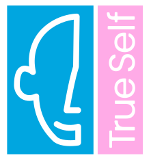
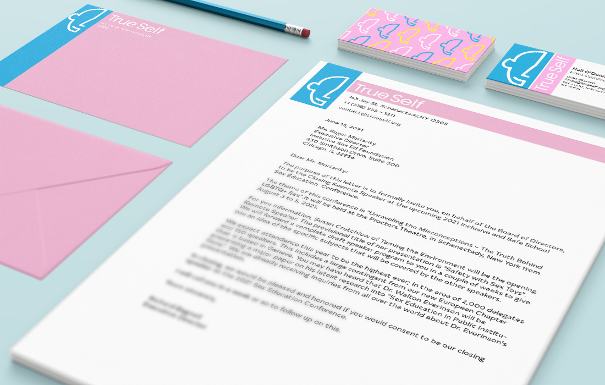
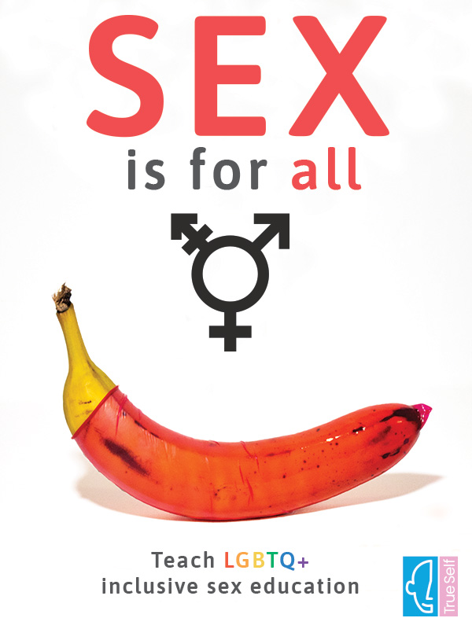
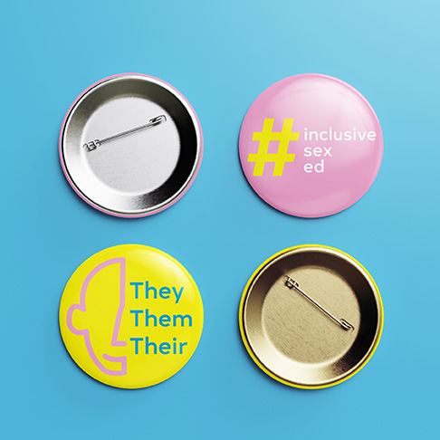
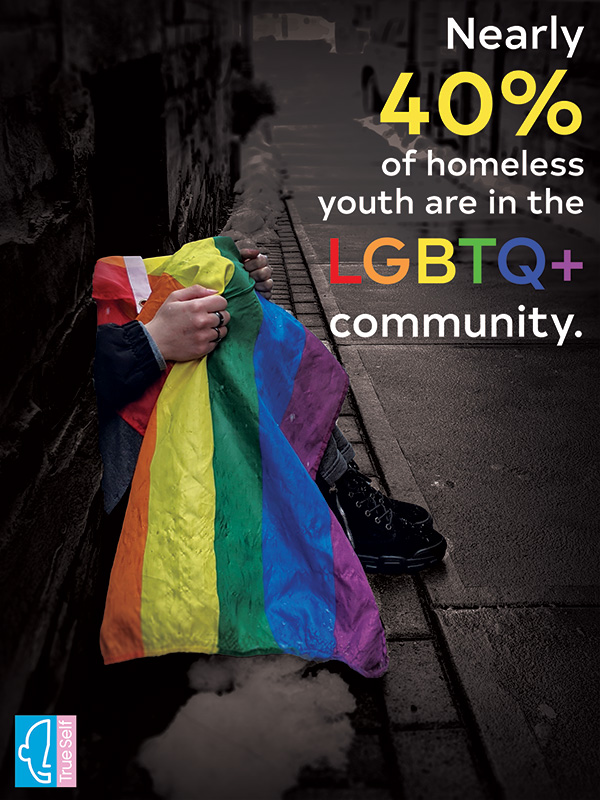
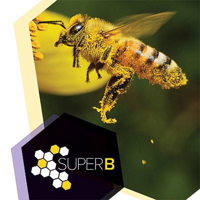
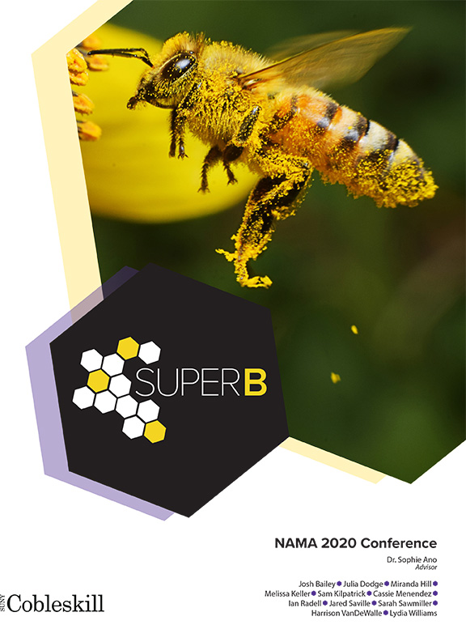
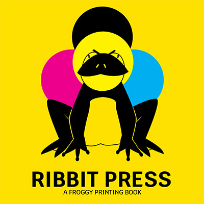

True Self
True Self
True Self was a project a I very passionate about. This project focused on the creation and branding of a non-profit LGBTQ+ resource center for underprivileged individuals. It was focused in Schenectady county on Jay street. The resource centers main goals was to spread awareness on the issues of accesibility withing the LGBTQ+ community, provide iclusive sex education for LGBTQ+ youth, and allow individuals to learn and become their true self.





SuperB
SuperB
SuperB was a special project I applied to and was chosen for to design an executive summary and marketing materials for a product that could change the world.This project was for the National Agricultural Marketing Association (NAMA). My team worked alongside this association to perfectly presently their product for competition.

